Обзор
Импортер FBX загружается анимации, скины скелетов и static геометрические сетки. В настоящее время поддерживаются следующие входные форматы: .fbx, .dxf, .даэ, .objи .3ds (однако, .fbx является предпочтительным форматом обмена). Кроме того, средство импорта FBX предоставляет графический интерфейс для изменения свойств перед их импортом в формат CRYENGINE.
Существующий конвейер контента, состоящий из экспортеров 3ds Max и Maya, по-прежнему работает. Однако импортер FBX делает CRYENGINE более доступным для большего числа инструментов DCC, таких как Blender, так что художники могут продолжать использовать свой любимый рабочий процесс.
Различных импортеров можно найти в разделе Инструменты → FBX Импорт.
Импортировать анимацию, скелет, скин или геометрию static очень просто; вы можете просто открыть соответствующий инструмент и перетащить и оставить а .fbx файл из папки в проводнике Windows на один из инструментов.
Альтернативно, вы также можете нажать Файл → Импортировать или используйте Импорт кнопку на панели инструментов.
Еще проще, чем использовать инструменты импорта FBX, — просто перетащить ресурсы в браузер ресурсов (это рекомендуемый рабочий процесс).
Дополнительную информацию об импорте ресурсов через Обозреватель ресурсов см. здесь.
Базовый рабочий процесс всех инструментов
Инструменты импорта FBX обычно используются следующим образом:
- Открыть источник .fbx (или другой совместимый) файл. Это можно сделать одним из трех способов:
- Собираюсь Файл → Импортировать
- Нажав на Импортировать файл кнопка на панели инструментов
- Перетаскивание совместимого файла из проводника Windows в область просмотра инструмента, который вы хотите использовать. - Осмотрите исходную сцену и решите, какие сетки или узлы вы хотите экспортировать в выходной файл. .cgf файл.
- Когда вы будете удовлетворены, нажмите Файл → Сохранить как (или нажмите кнопку Сохранить как кнопку на панели инструментов) и сохраните файл в папку с игрой.
- После этого вы сможете разместить его на своем уровне, открыв Создать объект инструмент и добавьте его так, как вы хотите, например, кисть или объект Geom, в зависимости от того, какой ресурс вы создали.
А .cgf файл всегда должен находиться в той же папке, что и .fbx (или любой совместимый) файл. .cgf ссылается на .fbx (или другой совместимый) файл по имени, а не по пути. Импортер FBX автоматически создаст копию .fbx файл в папке с игрой вместе с выводом .cgf файл, когда вы нажимаете Сохранить как...
.cgf файл по существу хранит все настройки, которые вы делаете в MI, а также ссылку на .fbx файл.
Загрузите уровень для правильного освещения.
Анимация
Это позволит импортировать анимацию, прикрепленную к .fbx файл.
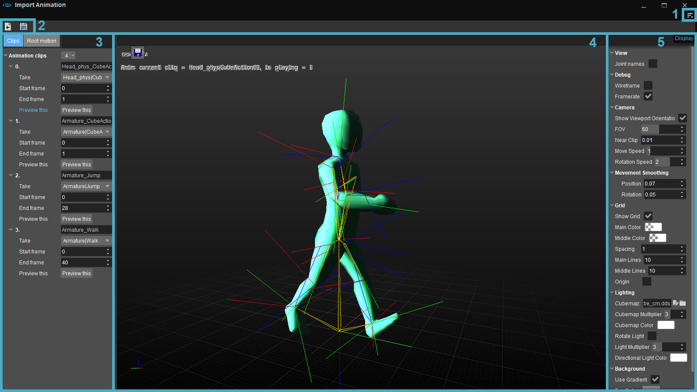
1. Меню
Доступ к меню возможен через 
Файл
| Вариант | Описание |
|---|---|
| Открыть... | Восстанавливает диалоговое окно импортера FBX. Это означает, что источник .fbx файл импортируется, а настройки сохраняются в .cgf файл применяется. Работает только с .cgf файлы, написанные импортером FBX. |
| Закрыть | Закрывает текущий открытый файл. |
| Сохранить | Перезаписывает текущий выходной файл. (Текущий выходной файл — это .cgf файл, последний раз записанный с помощью Сохранить как... или загружен Открыть CGF). Эта опция отключена, если текущий выходной файл не существует. |
| Сохранить как... | Всегда показывает диалоговое окно файла для указания пути к файлу. .cgf файл в папке с игрой. Также сохраняет копию исходного *.fbx (или другого совместимого) файла в ту же папку игры, в которой и будут сохраняться изменения. Импортер FBX уведомит вас, если вы попытаетесь таким образом перезаписать другой файл *.fbx с тем же именем. |
| Импорт | Импортирует .fbx, .dxf, .даэ, .obj или .3ds файл. |
| Реимпорт | Повторно импортирует текущий файл, если пользователь хочет отменить изменения, внесенные после первого импорта файла. |
| Последние файлы... | Перечисляет недавно использованные файлы. |
Панели инструментов
Вариант | Описание | ||||
|---|---|---|---|---|---|
Настроить... | Открывает окно настройки панели инструментов, позволяющее пользователям настраивать существующие панели инструментов и/или создавать новые панели инструментов в рамках этого инструмента. | ||||
Блокировка панелей инструментов | Если этот параметр отключен, положения панелей инструментов и разделителей внутри этого инструмента можно изменить путем перетаскивания. | ||||
Проставки | Следующие параметры позволяют пользователям использовать разделители при позиционировании панелей инструментов.
Проставки Опции меню доступны только тогда, когда Панели инструментов → Заблокировать панели инструментов отключен. | ||||
| Панели инструментов | Перечисляет все стандартные и пользовательские панели инструментов (если таковые имеются), созданные для этого инструмента, что позволяет пользователям выбирать, какую панель инструментов они хотят скрыть или отобразить. |
Если у инструмента есть панель инструментов, будь то панель по умолчанию или пользовательская, приведенные выше параметры также доступны при щелчке правой кнопкой мыши в области панели инструментов (только если панель инструментов уже отображается).
Помощь
Открывает страницу документации для этого инструмента.
2. Панель инструментов
На панели инструментов имеются следующие кнопки:
| Кнопка | Описание |
|---|---|
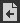 | См. выше в разделе «Файл». |
| См. выше в разделе «Файл». |
3. Панель клипов/корневого движения
Клипы
Здесь вы можете решить, какие анимации импортировать или даже добавить.
Нажав кнопку рядом с Анимационные ролики, вы можете добавить новые анимации или удалить все существующие.
Удаление отдельного анимационного клипа осуществляется щелчком правой кнопкой мыши по номеру анимации слева и выбором Удалить.
Нажав Предварительный просмотр, вы увидите анимацию, воспроизводимую в окне просмотра.
Корневое движение
При нажатии кнопки «Корневое движение» появляется вид узла. В этом представлении вы можете дополнительно выбрать один узел. если узел выбран, он действует как «локатор движения». См. Настройка локатора передвижения в 3ds Max.
4. Окно просмотра
Здесь вы увидите графическое представление импортируемой анимации. В верхнем левом углу этой панели есть одно раскрывающееся меню:
| Вариант | Описание |
|---|---|
| Показать все сетки | Показывает все сетки. |
| Показать выбранный узел | Показывает только сетки, принадлежащие узлу, выбранному в списке узлов. |
| Показать выбранное поддерево | Показывает только сетки, принадлежащие поддереву, выбранному в список узлов. |
5. Параметры отображения
В правом верхнем углу окна просмотра находится Параметры отображения кнопка. Нажатие этой кнопки откроет меню параметров отображения.
Это меню содержит следующие опции:
Посмотреть
| Вариант | Описание |
|---|---|
| Совместные имена | Показывает/скрывает названия соединений в окне просмотра. |
Отладка
| Вариант | Описание |
|---|---|
| Каркас | Показывает/скрывает каркас ресурса. |
| Частота кадров | Показывает/скрывает частоту кадров в окнах просмотра. |
Камера
| Вариант | Описание |
|---|---|
| Показать ориентацию видового экрана | Показывает гизмо оси в левом нижнем углу видовых экранов, показывающее ориентацию актива. |
| FOV | Изменяет поле зрения. |
| Рядом с клипом | Более высокое значение означает большее расстояние ближней плоскости отсечения до камеры. Увеличьте это значение, если вы испытываете артефакты буфера глубины на объектах, находящихся дальше от камеры. Уменьшите это значение, если объекты рядом с камерой кажутся обрезанными. |
| Скорость перемещения | Изменяет скорость движения влево и вправо. Вперед и назад всегда скорость 0,7. |
| Скорость вращения | Изменяет скорость вращения камеры. |
Сглаживание движения
| Вариант | Описание |
|---|---|
| Позиция | По сути "размазывает" трансляцию камеры со временем. Используется для плавных движений камеры. Большее значение означает более плавный переход в течение большего промежутка времени. |
| Вращение | То же, что Позиция. Более плавное вращение камеры. |
Сетка
| Вариант | Описание |
|---|---|
| Показать сетку | Показывает/скрывает сетку. |
| Основной цвет | Позволяет изменить цвет основных линий сетки. |
| Средний цвет | Позволяет изменить цвет средних линий сетки. |
| Расстояние | Изменяет расстояние между линиями сетки. |
| Основные линии | Изменяет количество основных линий сетки. |
| Средние линии | Изменяет количество средних линий сетки. |
| Происхождение | Рисует гизмо в начале координат (позиция 0, 0, 0). Попробуйте это сделать на пустой сцене или в каркасном режиме, чтобы увидеть эффект. |
Освещение
| Вариант | Описание |
|---|---|
| Яркость | Изменяет яркость окружающего света на активе. |
| Окружающий цвет | Изменяет цвет окружающего освещения актива. |
| Поворот света | Включает/выключает непрерывное вращение источника направленного света. |
| Множитель света | Используется для затемнения или увеличения направленного света. |
| Множитель световых характеристик | Изменяет зеркальную подсветку объекта от направленного света. |
| Цвет направленного света | Устанавливает цвет направленного света. |
Фон
| Вариант | Описание |
|---|---|
| Использовать градиент | Переключает между градиентным фоном и равномерно окрашенным фоном. |
| Верхний цвет | Изменяет верхний цвет градиентного фона (если флажок «Использовать градиент» не установлен, это будет единственный цвет). |
| Нижний цвет | Изменяет нижний цвет градиентного фона. |
Скелет
Это позволит импортировать скелет, прикрепленный к .fbx файл.
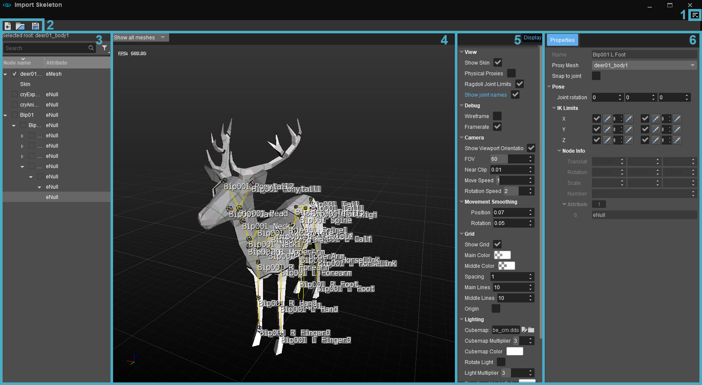
1. Меню
Для получения дополнительной информации о опциях меню, пожалуйста, см. здесь.
2. Панель инструментов
Для получения дополнительной информации о кнопках панели инструментов и их функциях см. см. здесь.
3. Список узлов
В списке узлов вы можете выбрать, какое поддерево или отдельный узел вы хотите импортировать.
Вверху также есть панель поиска для быстрого поиска определенного узла, если в активе их так много, что трудно сохранить хороший обзор.
4. Окно просмотра
Здесь вы увидите графическое представление импортируемого скелета. В верхнем левом углу этой панели есть одно раскрывающееся меню:
| Вариант | Описание |
|---|---|
| Показать все сетки | Смотрите здесь. |
| Показать выбранный узел | Смотрите здесь. |
| Показать выбранное поддерево | Смотрите здесь. |
5. Параметры отображения
Смотрите здесь для получения дополнительной информации о параметрах отображения.
6. Свойства
Для получения дополнительной информации, пожалуйста, обратитесь к Свойства раздел на этой странице.
сетка
Эта часть импортера позволяет импортировать сетки и скины. В настоящее время поддерживаются следующие входные форматы: .fbx, .dxf, .даэ, .objи .3ds (однако, .fbx является предпочтительным форматом). Кроме того, средство импорта FBX предоставляет графический интерфейс для изменения свойств геометрии, специфичных для CRYENGINE, таких как настройки уровня детализации (LOD) и Пользовательские свойства (UDP).
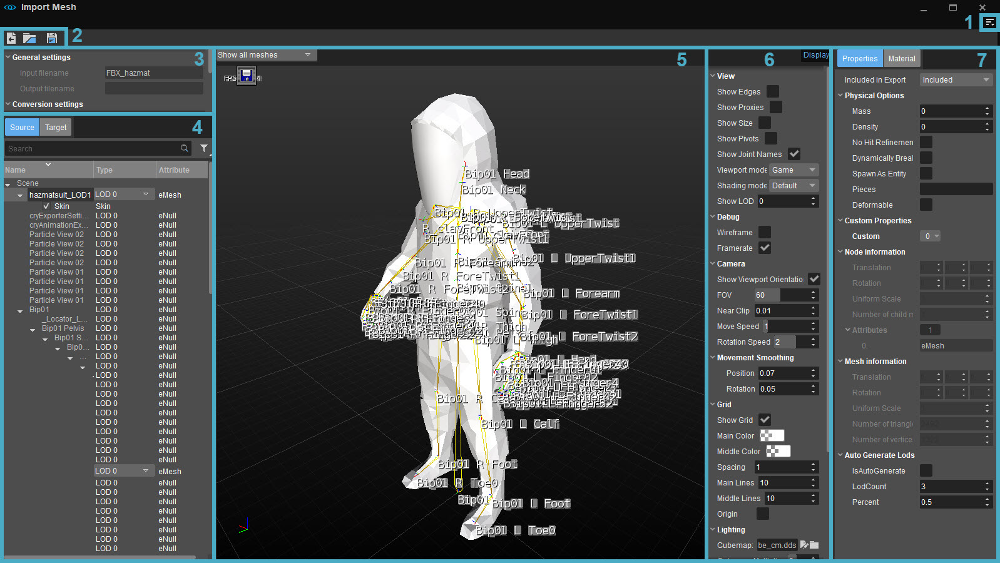
1. Меню
Для получения дополнительной информации о опциях меню, пожалуйста, см. здесь.
2. Панель инструментов
Параметры панели инструментов предоставляют ярлык для параметров файла. Для получения дополнительной информации, пожалуйста см. здесь.
В представлении «Настройки» вы найдете общие настройки и настройки, связанные с преобразованием вашей сцены.
3. Просмотр настроек
Общие настройки
| Настройка | Описание |
|---|---|
| Введите имя файла | Имя файла, который был импортирован |
| Имя выходного файла | Это файл, который будет перезаписан при нажатии Сохранить. Это либо последний файл, который вы сохранили с Сохранить как... или файл, который вы открыли с помощью Открыть CGF. |
Настройки статической сетки
| Настройка | Описание |
|---|---|
| Объединить все узлы | Объединяет все сетки на одном LOD в одну. NOTE: это оптимизация рендеринга, которая не влияет на повороты сеток. |
| Происхождение сцены | По умолчанию RC игнорирует локальные преобразования корневых узлов, что означает, что их опорные точки размещаются в начале координат мира, и сетки транслируются соответствующим образом. Когда Происхождение сцены включен, локальное преобразование применяется, и корневые узлы сохраняют свое положение в мировом пространстве. |
Настройки конвертации
настройки конвертации управляйте масштабом и ориентацией сетки CGF. Используйте эти настройки, например, если система координат инструмента DCC, использованного для создания исходного файла, отличается от системы координат CRYENGINE (в Maya Y = вверх вместо Z).
| Настройка | Описание |
|---|---|
| Единица | Изменяет единицу измерения в сетке. |
| Масштаб | Изменяет масштаб объекта. |
| Вперед | Изменяет, какая ось указывает вперед. |
| Вверх | Изменяет, какая ось направлена вверх. |
Настройки вывода
| Настройка | Описание |
|---|---|
| Используйте 32-битную точность | Если этот параметр включен, координаты вершин сохраняются с точностью до 32 бит. Если этот параметр не включен, они будут храниться с точностью до 16 бит. |
4. Представление источника/цели
Эту панель можно переключать между двумя разными представлениями: исходным представлением и целевым представлением, нажимая кнопки вверху.
Просмотр исходного кода
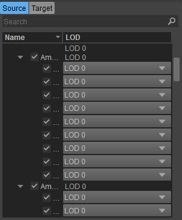
Представление «Исходный код» показывает иерархию узлов, список материалов в исходной сцене и список используемых текстур. По сути, он отражает настройку сцены в исходном файле. При выборе любого элемента отображаются его свойства в Свойства панель (7).
Под строкой поиска на этой панели есть два столбца: «Имя» и «Тип».
| Столбец | Описание |
|---|---|
| Имя | Показывает имя узла. |
| Тип | Показывает, является ли узел LOD, физическим прокси или скином, а в случае LOD или физического прокси позволяет вам изменить, какой это LOD, или превратить его в (невидимый) физический прокси. Если возможно, LOD узла можно изменить, щелкнув этот столбец. Изменение LOD узла возможно, если это листовой узел и дочерний узел узла сетки. Если узел не имеет раскрывающегося меню, он не считается LOD. |
Меню, вызываемые правой кнопкой мыши
Щелкнув правой кнопкой мыши заголовки столбцов (Имя, LOD), вы можете показать или скрыть любой из этих столбцов.
Щелкнув правой кнопкой мыши по узлу, вы получаете следующие возможности:
Вариант | Описание |
|---|---|
| Включить этот узел | Включает узел в экспортированный .cgf файл. |
| Исключить этот узел | Исключает узел из экспортированного .cgf файл. |
| Выберите материалы, используемые сеткой | В списке материалов в правом столбце выбираются все материалы, используемые выбранной в данный момент сеткой. |
| Автоматическое добавление прокси | Автоматически добавляет прокси в вашу сетку. Смотрите здесь для получения дополнительной информации об этой функции. |
| Развернуть дочерние узлы | Разворачивает все дочерние узлы текущего выбранного узла. |
| Свернуть дочерние узлы | Сворачивает все дочерние узлы текущего выбранного узла. |
| Развернуть все узлы | Расширяет список узлов. |
| Свернуть все узлы | Сворачивает весь список узлов. |
| Показать только скины | Показывает только узлы кожи. NOTE: это просто поиск по слову «скин». Чтобы снова отобразить другие узлы, удалите текст из панели поиска. |
Включение и исключение узлов
По умолчанию каждый узел иерархии также включен в .cgf файл, отмеченный галочкой рядом с его именем. Вы можете исключить узел на панели свойств или щелчок правой кнопкой мыши он в списке узлов. И наоборот, если вы снимите флажок с узла, его сетка не появится в .cgf файл.
Исключение узла исключает всех его дочерних элементов (то есть все его поддерево).
Пример: рассмотрим иерархию A → B → C, где A является корнем и родительским элементом B, а B является родительским элементом C. Когда вы исключаете B, C также исключается.
Импорт скина
С помощью инструмента «Импорт сетки» вы также можете импортировать скины для своих ресурсов. Однако это случай «или/или»: вы либо импортируете сетку, либо импортируете скин.
Скины можно найти на вкладке «Источник»:
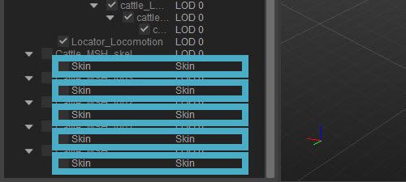
Просто установите флажок напротив скина, который хотите импортировать, и нажмите кнопку Сохранить кнопка (или Файл -> Сохранить), чтобы импортировать этот скин.
Вы можете импортировать только один скин за раз.
Целевой вид
Представление «Цель» показывает иерархию узлов выходных данных. .cgf файл. Здесь вы видите эффект Объединить все узлы вариант.
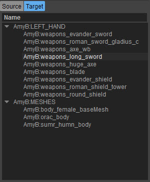
5. Окно просмотра
Здесь вы увидите графическое представление импортируемой анимации. В верхнем левом углу этой панели есть одно раскрывающееся меню:
| Вариант | Описание |
|---|---|
| Показать все сетки | Смотрите здесь. |
| Показать выбранный узел | Смотрите здесь. |
| Показать выбранное поддерево | Смотрите здесь. |
6. Параметры отображения
Посмотреть
| Вариант | Описание |
|---|---|
| Показать края | Показывает/скрывает края в нижней половине области просмотра, когда включена опция «Показать сетку RC». |
| Показать прокси | В окне просмотра игры прокси-материалы и прокси-узлы отображаются прозрачным синим цветом. |
| Показать размер | Показывает две коробки. Белый — это фактическая ограничивающая рамка сетки. Серый — это куб 1x1x1, который дает некоторое представление об относительном размере сетки. |
| Показать опорные точки | Рисует линию от центра ограничивающей рамки сетки к ее началу. Делает очевидным, например, что куб смоделирован вокруг 0 или смещен на некоторую величину. Интересно, отключен ли относительный перевод сеток. |
| Режим просмотра |
|
| Показать LOD | Полезно только в том случае, если .cgf содержит LOD (уровень детализации). Установив для этого параметра значение N, вы увидите, какую сетку движок выбирает для LOD N. Если вы не указали LOD, то сетка одинакова для всех уровней. |
Описание остальных параметров отображения см. нажмите здесь.
7. Панель «Свойства/Материал»
На этой панели могут отображаться свойства узла, выбранного в представлении «Исходный код».
Панель свойств
В зависимости от того, выбрана ли в списке узлов вся сцена, поддерево или один узел, появляются следующие параметры:
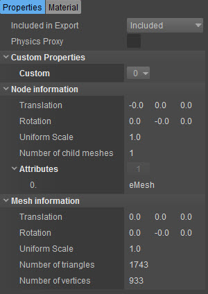
| Вариант | Описание |
|---|---|
| Включено в экспорт |
|
| Физический прокси | Переключает некоторые параметры UDP, которые имеют смысл только для прокси. |
Физические параметры
| Вариант | Описание |
|---|---|
| Шарнирный | Эта опция появляется только в том случае, если выбраны узлы, не являющиеся сеткой. При активации появляются следующие опции:
|
| Масса | Масса определяет вес объекта на основе реальной физики в кг. масса=0 устанавливает объект как «неподвижный». Это используется на вашей базовой части, которая никогда не будет двигаться, например, на подвале дома, например, или на столбе для знаков, который не должен быть подвижным и всегда оставаться в исходном положении. При использовании в кистях и объектах Geom это масса оставшейся части. При использовании в обычных объектах массы всех частей масштабируются так, чтобы их общая масса соответствовала массе, указанной в свойствах объекта. CAUTION - Вы должны определить это значение или плотность, чтобы обеспечить правильную работу моделирования. |
| Плотность | Движок автоматически вычисляет массу объекта на основе плотности и ограничивающей рамки объекта. Может использоваться альтернативно масса. |
| Нет уточнения попаданий | Не выполняйте уточнение попаданий на уровне рендер-меша — используйте только тип поверхности физического прокси (но декали/эффекты все равно будут проецироваться обратно на рендер-сетку). Если это используется, то рендермешу не обязательно должен быть назначен тип поверхности — только прокси-материалы физики должны иметь типы поверхности. По умолчанию уточнение попаданий в рендермеше выполняется всегда, если эта строка не установлена. Другой способ получить более точную трассировку лучей — использовать специальный прокси-сервер «без столкновений» или «препятствий». |
| Динамически разрушаемый | Это строка особого случая для динамически разрушаемых сеток (например, стекла) – эта строка помечает объект как «динамически разрушаемый». Однако эта строка не требуется для стекла, деревьев или ткани, поскольку они уже автоматически помечены движком (через систему типа поверхности). Это следует использовать только с новыми типами динамически разрушаемых сеток. |
| Создать как сущность | Если свойства геометрии рендеринга включают «entity», объект не будет исчезать после отключения от основного объекта. |
| штук | Вместо того, чтобы отсоединять деталь при разрушении соединения, она мгновенно исчезает, создавая эффект частиц в зависимости от типа поверхности прокси. |
| Деформируемый |
|
| Примитивный | Сделайте этот прокси примитивом в движке. |
| Нет окклюзии взрыва | Позволит силе/урону от взрыва проникнуть через физический прокси. |
Пользовательские свойства
| Вариант | Описание |
|---|---|
| Пользовательский | Здесь вы можете добавлять UDP в виде пар ключ=значение, как в инструментах DCC. Вы можете добавить UDP, для которых дополнительные виджеты не являются или не может быть предоставлено (подумайте об UDP для конкретной игры). |
Информация об узле
Информация об узлах и сетках в основном предназначена для отладки. Они показывают преобразования, считанные из .fbx файл.
Преобразования узлов обычно представляют собой преобразования, заданные в инструменте DCC, и могут отличаться от 0,0,0.
| Вариант | Описание |
|---|---|
| Перевод | Показывает перевод выбранного узла в исходном файле. |
| Вращение | Показывает вращение выбранного узла в исходном файле. |
| Единый масштаб | Показывает масштаб осей X, Y и Z. Если масштаб одинаков по всем трем осям, мы упрощаем вывод и вместо этого пишем одно значение для «единого масштаба». |
| Количество дочерних сеток | Показывает количество дочерних сеток узла. К узлам может быть прикреплено более одной сетки. Внутренне мы объединяем их в одну сетку для каждого узла. |
| Атрибуты | В основном для отладки. Список атрибутов узла, который мы читаем из FBX. Показывает, какого типа этот узел (примеры: Камера, Свет, Сетка). |
Информация о сетке
Сети могут иметь свои собственные преобразования, которые представляют собой смещение от их узла, но обычно это 0,0,0. В противном случае то же самое, что и «информация об узле».
| Вариант | Описание |
|---|---|
| Перевод | Показывает перевод выбранной сетки в исходном файле. |
| Вращение | Показывает вращение выбранной сетки в файле сетки. |
| Единый масштаб | Показывает масштаб осей X, Y и Z. Если масштаб одинаков по всем трем осям, мы упрощаем вывод и вместо этого пишем одно значение для «единого масштаба». |
| Количество треугольников | Количество треугольников в выбранной сетке. |
| Количество вершин | Количество вершин выбранной сетки. |
Материал панели
Панель «Материал» показывает все материалы, присутствующие в исходном файле. Каждый исходный материал имеет Подматериал ID, Физическая реализация настройка и Цвет.
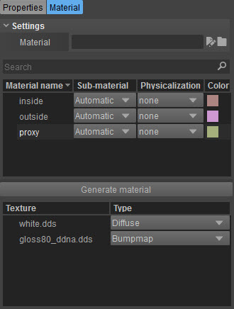
Настройки
| Вариант | Описание |
|---|---|
| Материал | Показывает материал, использованный в сцене. Каждый CGF имеет ссылку на один материал. С помощью этого средства выбора материала вы устанавливаете выходной материал CGF. |
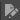 | Открывает Material Editor (работает только если назначен материал) |
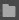 | Назначает материал сцене. |
Список материалов
В верхней половине панели «Материал» показаны материалы, использованные в исходной сцене.
| Столбец | Описание |
|---|---|
| Название материала | Показывает название материала. |
| Подматериал | Сопоставляет исходный материал со слотом материала движка, который можно назначить в Просмотр настроек. Подматериал можно изменить, нажав на значок Подматериал столбец и выбрав подматериал в появившемся раскрывающемся меню. |
| Физическая реализация | Физическая реализация настройка такая же, как и в экспортерах DCC. Если вы установите настройку физикализации материала, она также задает такие же настройки для всех других материалов с тем же идентификатором подматериала. NOTE: Эту настройку можно изменить так же, как и субматериал: нажав на значок Физическая реализация столбец и выбрав подматериал в появившемся раскрывающемся меню. |
| Цвет | Цвет исходного материала предназначены только для предварительного просмотра. Установка цвета исходного материала помогает найти все вершины, использующие этот материал, в окне просмотра предварительного просмотра, но не влияет на цвет экспортируемого материала. .cgf файл любым способом. |
Меню, вызываемые правой кнопкой мыши
При щелчке правой кнопкой мыши по заголовки столбцов (Название материала, Субматериал, Физическая форма, Цвет), вы можете отображать или скрывать эти столбцы.
При щелчке правой кнопкой мыши по материал, вы получаете следующие возможности:
| Вариант | Описание |
|---|---|
| Выберите сетки, используя этот материал | Выбирает узлы в списке узлов, в которых используется выбранный материал. |
| Выберите цвет подматериала | Позволяет выбрать цвет, отображаемый в окне просмотра для выбранного материала. |
Создать материал
Нажмите на Создать материал с правой стороны если вы хотите создать материал из FBX. Альтернативно, вы можете просмотреть уже созданный материал.
Список текстур
Список текстур под списком материалов показывает все текстуры, использованные в исходном объекте. Эта панель имеет четыре столбца: Имя файла, Существует, TIF существует и RC Настройки по умолчанию.
| Столбец | Описание |
|---|---|
| Имя файла | Показывает имя файла используемых текстур. |
| Тип | Позволяет выбрать тип текстуры (диффузная, рельефная или зеркальная). По сути, это устанавливает предустановленные настройки для RC при преобразовании в CryTif. |
Добавление автоматических прокси
В Mesh Importer вы можете добавлять прокси-сетки в сетки static всего несколькими щелчками мыши. Формы прокси-сетей генерируются автоматически.
Это делается в Источник вкладка в левом нижнем углу. Просто щелкните правой кнопкой мыши узел «Сцена» или любой из подузлов и выберите Добавить автоматические прокси.
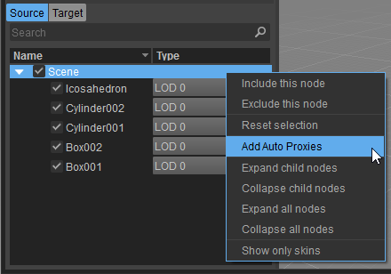
Добавив эти автоматические прокси, вы увидите сетку рендеринга, которая будет использоваться для создания прокси. Если у него есть несколько компонентов, вы можете выбрать, какие из них вы хотите использовать, щелкнув по ним (компонент, также называемый «островом», — это часть сетки, которая не связана с остальными; для прокси сцены каждый узел будет отдельным компонентом, но узлы также могут иметь подкомпоненты на основе связности сетки). Если вы удалите некоторые компоненты из узла автопрокси, вы можете добавить их в новый узел автопрокси, снова перейдя в родительское меню и выбрав «Добавить оставшиеся прокси».
Прокси генерируются путем вокселизации сетки рендеринга, определения ее частей, которые можно разумно аппроксимировать примитивами, и построения упрощенных сеток из оставшихся вокселей.
При выборе Авто прокси родительский узел в Источник на вкладке «Свойства» вы увидите несколько кнопок и флажков на панели «Свойства»:
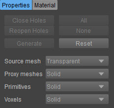
| Кнопка | Описание (активно только до создания прокси) |
|---|---|
| Закрыть отверстия | Закрывает дыры в сетке, используемой для вокселизации. Открытые отверстия могут привести к «протеканию» вокселей через них. |
| Открыть дыры заново | Повторно открывает отверстия, закрытые кнопкой «Закрыть отверстия». |
| Все | Выбирает все компоненты для генерации. |
| Нет | Отменяет выбор всех компонентов. |
| Генерировать | Генерирует прокси для выбранных вами компонентов. Новые подузлы для каждой формы прокси-сетки теперь будут отображаться под Авто прокси родительский узел. |
| Сброс | Удаляет все сгенерированные прокси, позволяя вам начать процесс заново. |
| Исходная сетка | Показывает/скрывает сетку исходного объекта. Существует три степени отображения исходной сетки:
|
| Прокси-сетка | Показывает/скрывает сгенерированные прокси-сетки. Существует три степени отображения прокси-сетей:
|
| Примитивы | Показывает/скрывает сгенерированные примитивные прокси. Существует три степени отображения сгенерированных примитивных прокси:
|
| Вокселы | Показывает/скрывает вокселизацию исходной сетки. Существует две степени, в которых может быть отображена вокселизация исходной сетки:
Отображение вокселей поможет вам редактировать прокси-форму; вы можете щелкнуть воксель в окне просмотра, и эта точка будет соединена с остальной частью прокси-сетки. |
Окончательный прокси вашего актива будет основан на Прокси-сетка и Примитивы упомянуто выше. Исходная сетка служит только для того, чтобы увидеть, похож ли прокси на объект, а воксели являются лишь основой, на которой построено все остальное, а также помогает вам редактировать форму прокси (см. выше).
Отмена выбора компонентов
Прежде чем создавать автоматические прокси, вы можете отменить выбор любых компонентов, которые вы не хотите включать в прокси. Для этого вы просто нажимаете на них в окне просмотра. Тогда они станут прозрачными, то есть не будут созданы:
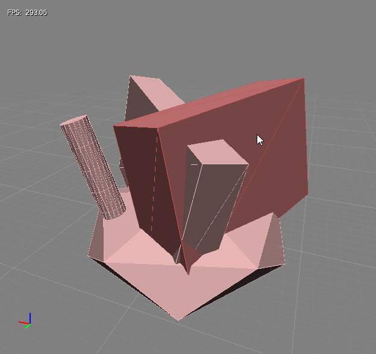 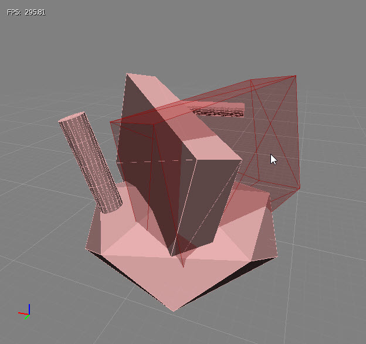
Свойства
При выборе автоматически сгенерированных прокси в Источник вкладке, вы можете получить различные свойства в Свойства панель. Они различаются в зависимости от того, какой тип прокси вы выбрали.
Автоматические прокси (родительский, все источники)
| Недвижимость | Описание |
|---|---|
| Объединить острова | Выбирает, строить ли для каждого острова (компонента) отдельную вокселизацию или использовать комбинированную. |
| Выровненные по оси вокселы | Используйте воксели, выровненные по осям, или попытайтесь найти «наилучшую подходящую» ориентацию ограничивающей рамки. |
| Силовая одиночная коробка | Принудительно использует одну ограничивающую рамку в качестве прокси. |
| Выпуклая оболочка | Сделайте выпуклую оболочку исходной сетки перед вокселизацией. |
| Обнаружение примитивных поверхностей | Обнаружение коробок и цилиндров в вокселизации. |
| Обнаружение примитивных стержней | Обнаружение капсул и более длинных цилиндров при вокселизации. |
| Воксельный номер ячейки | Устанавливает разрешение вокселизации (по самому длинному измерению). |
| Проходы сглаживания сетки | Степень нормального сглаживания, примененная к вокселам, остается аппроксимирующейся сетками. Большее сглаживание означает более простые прокси, но может привести к потере слишком большого количества деталей. |
| Расширенные настройки | |
| Использование нормалей in и max в качестве вершин сетки | Проверьте, не теряют ли прокси-меши слишком много важных функций. |
| Раздувание примитивов | Увеличение размера применяется к обнаруженным примитивам. |
| Раздувание сеток | Увеличение размера применяется к обнаруженным сеткам. |
| Минимальная эффективность примитивного объема стержня | Пороговое соотношение объема, покрытого вокселами, к общему примитивному объему. Примитивные стержни (капсулы и цилиндры long) с меньшими передаточными числами отбрасываются. |
| Минимальная эффективность поверхностного примитивного объема | Пороговое соотношение объема, покрытого вокселами, к общему примитивному объему. Примитивные поверхности (коробки и цилиндры) с коэффициентами ниже этого отбрасываются. |
| Порог высоты/радиуса для штоков капсулы/цилиндра | Стержни с соотношением высоты и радиуса выше этого значения считаются капсулами. |
| Порог объединения примитивных поверхностей (в вокселах) | Объединяет области-кандидаты начальной аппроксимации поверхности в пределах этого расстояния. |
| Итерации сглаживания обнаружения поверхности | Обычно большее количество итераций приводит к меньшему или большему количеству поверхностных примитивов. |
| Порог плоскостности поверхности | Устанавливает, насколько плоской должна быть область, чтобы ее можно было считать кандидатом на поверхностный примитив. |
| Выравнивание поверхности с нормальным порогом сетки | Устанавливает, насколько близко выравнивание основного примитива поверхности должно совпадать с исходной сеткой. |
| Порог объединения кандидатов в стержни (в вокселах) | Объединяет области-кандидаты исходной аппроксимации стержня в пределах этого расстояния. |
| Порог кривизны кандидатов на стержни | Предел изгиба для областей, рассматриваемых для аппроксимации стержня. |
| Раздувание примитивов для удаления вокселей (в ячейках) | Как только примитив обнаружен, содержащиеся в нем воксели удаляются. Этот параметр устанавливает, насколько раздувать примитив для удаления вокселей (его нужно хотя бы немного удалить, чтобы избежать случайного воксельного шума на поверхности) |
| Коэффициент заполнения отверстий примитивов | Устанавливает, насколько сильно будут заполняться дыры, вызванные удалением примитивов из вокселизации (большие значения могут привести к «выпучиванию») |
| Требуемая примитивная открытая площадь | Минимальная примитивная область, которая не должна быть покрыта другими вокселами. |
| Минимальное количество поверхностных примитивных вокселей | Минимальное количество вокселей в поверхностных примитивных областях-кандидатах. |
| Минимальное количество стержневых примитивных вокселей | Минимальное количество вокселей в регионах-кандидатах стержневых примитивов. |
| Минимальное количество вокселей сетки | Минимальное количество вокселей на островах оставлено для аппроксимации сетки. |
| Уточнение вокселей с помощью исходной сетки | Выровняйте вершины прокси-сетки (на основе вокселей) с исходной сеткой. Обычно рекомендуется, если только исходная сетка не слишком детализирована или зашумлена. |
Если вы выберете сгенерированный прокси в Источник вкладке вы можете установить присвоенный ей индекс подматериала и тип прокси-сервера Crytek (Твердый/Препятствовать/NoCollide). Для примитивов размеры и ориентация можно редактировать вручную, а для сеток можно щелкать отдельные вокселы, чтобы они стали вершинами прокси-сетки (изначально в качестве вершин выбирается только небольшая часть вокселей, в основном на основе настройки «Проходы сглаживания сетки»). Обратите внимание, что последний вариант не требует выбора соответствующего прокси-сервера сетки.
Настройка скелетных прокси FBX и лимитов Ragdoll
Эта функция позволяет создавать физические персонажи с помощью конвейера FBX, который требует указания геометрии прокси-кости и ограничений кости.
Настройка скелетных прокси
Начиная с CRYENGINE 5.3, кости можно назначать в узлах сетки в качестве прокси. Это означает, что FBX уже должен содержать все прокси-геометрии. Узлы сетки, используемые в качестве прокси, не обязаны соответствовать какой-либо иерархии.
Если вы следовали соглашениям об именах Max или Maya (например, кость называется "Кость", у его прокси есть имя "Физ.кости"или"Bone_phys"), узлы сетки автоматически назначаются костям.
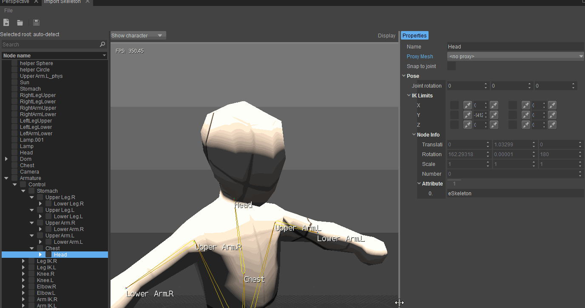
Установка ограничений Рэгдолла
Свойства предела рэгдолла содержат матрицу с 6 элементами: каждая из трех осей X, Y и Z; может быть минимальное и максимальное ограничение. Значения ограничений относятся к вращению позы привязки кости (они добавляются к локальному преобразованию кости при записи в файл .chr).
Матрица содержит четыре элемента управления для каждого ограничения. Помимо поля со счетчиком фактического значения, есть две кнопки и флажок. Флажок можно использовать для отключения или включения ограничения. Левая и правая кнопки используются для копирования ограничения из и в текущую позу соответственно.
Кость может быть установлена с помощью элементов управления, превышающих пределы IK. Эта поза в основном используется только для предварительного просмотра. Типичный рабочий процесс установки ограничений IK заключается в установке кости в крайнем положении и последующем копировании этой позы в ограничение. 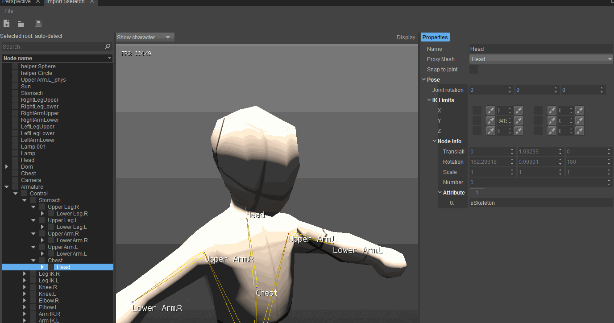
3. Просмотр настроек
В представлении «Настройки» вы найдете общие настройки и настройки, связанные с преобразованием вашей сцены.
Общие настройки
| Настройка | Описание |
|---|---|
| Введите имя файла | Имя файла, который был импортирован. |
| Имя выходного файла | Это файл, который будет перезаписан при нажатии Сохранить. |
Настройки статической сетки
| Настройка | Описание |
|---|---|
| Объединить все узлы | Объединяет все сетки на одном LOD в одну. NOTE: это оптимизация рендеринга, которая не влияет на повороты сеток. |
| Происхождение сцены | По умолчанию RC игнорирует локальные преобразования корневых узлов, что означает, что их опорные точки размещаются в начале координат мира, и сетки транслируются соответствующим образом. Когда Происхождение сцены включен, локальное преобразование применяется, и корневые узлы сохраняют свое положение в мировом пространстве. |
Настройки конвертации
настройки конвертации управляйте масштабом и ориентацией сетки CGF. Используйте эти настройки, например, если система координат инструмента DCC, использованного для создания исходного файла, отличается от системы координат CRYENGINE (в Maya Y = вверх вместо Z).
| Настройка | Описание |
|---|---|
| Единица | Изменяет единицу измерения в сетке. |
| Масштаб | Изменяет масштаб объекта. |
| Вперед | Изменяет, какая ось указывает вперед. |
| Вверх | Изменяет, какая ось направлена вверх. |
Настройки вывода
| Настройки | Описание |
|---|---|
| Используйте 32-битную точность | Если этот параметр включен, координаты вершин сохраняются с точностью до 32 бит. Если этот параметр не включен, они будут храниться с точностью до 16 бит. |